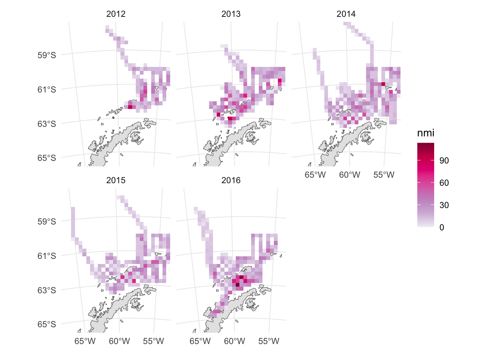
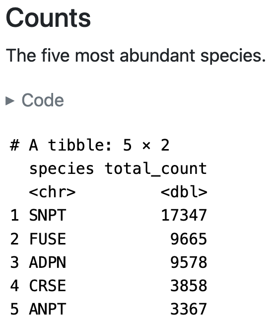
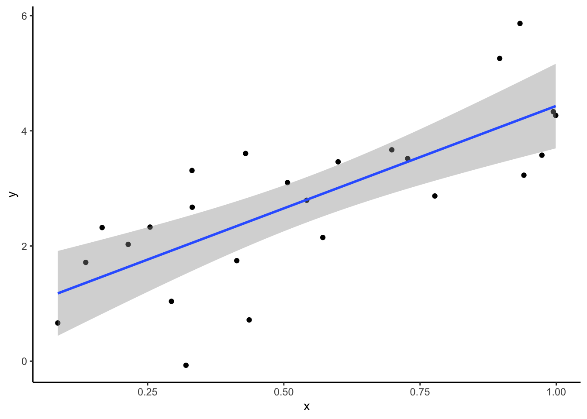
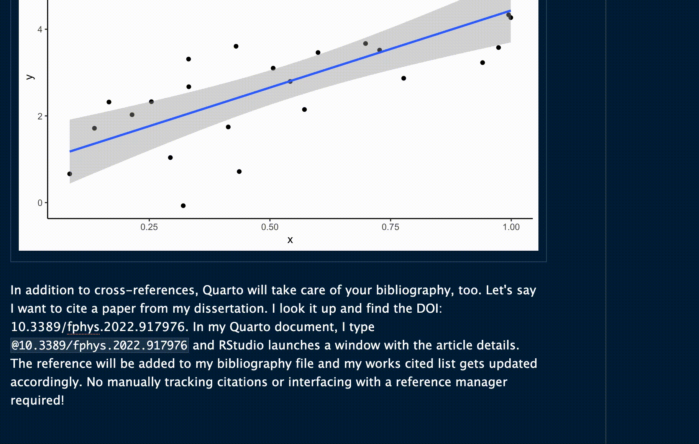

library(tidyverse)Quarto, like its predecessor, R Markdown, is a framework for integrating code, text, figures, and more. As an implementation of literate programming1, Quarto is great for all stages of the scientific workflow! The following sections give examples of how to use Quarto for exploring data with collaborators and for communicating your science
Exploratory analysis with collaborators
It’s unrealistic to expect we can jump directly from data collection to the final analysis. Science in general, but especially field science with all its unpredictability, is built from iterative explorations. It’s so, so easy to lose track of what you’ve tried, why you tried it, and what did or didn’t work. Quarto is great for keeping track of your efforts and sharing them with collaborators.
My work on the Antarctic Winter Community project is an example of this approach. The data for this project includes environmental samples collected at stations arranged in a grid, as well as top predator sightings collected along transects between stations (Figure 1).

The project structure consists of the following:
A GitHub repo with the analysis code
A directory of Quarto documents describing each stage of the exploratory analysis
A landing page with links to the Quarto outputs
For example, the Predators Quarto document describes the predator sighting data, including a table of the five most abundant species (Figure 2).

I use these documents for two reasons. First, they help me park downhill. It’s common when exploring a dataset to put it down for a day, a week, or even a year while you focus on something else (field work, classes, and so on). When you resume data exploration, it takes a while to reacquaint yourself with the data and the code, and generally remember where you left off. Quarto keeps your notes and figures in the same document as the code, which helps you figure out how to jump back in. It’s like parking your car downhill: you spend less time and energy getting moving again after stopping.
The second reason I like using Quarto this way is these documents serve as raw material for 1-on-1 meetings with my supervisor. The day before our bi-weekly meetings, I’ll send him a project update email with links to new figures or tables. The documents keep those outputs in context with the rest of the data exploration, making it easier for my supervisor to give me in depth feedback on what I’ve done and plan next steps together. You can do the same thing a lot of other ways, like in an email thread or a running Google Doc. But I like Quarto because it means my updates are all happening in one place, rather than forcing me to update code, figures, and notes separately - which can easily get out of sync!
Communicating your science
I’ve shown you how Quarto documents can create reports in HTML format, for sharing online. But it has a lot of other output formats, too, including PDFs for submitting journal articles and presentation slides. In fact, this blog post doubled as a lab meeting presentation, and you can find the source code for that presentation here.
Technical writing (like writing a manuscript for a journal) in Quarto has a learning curve, but I think it’s worth it. Once you’ve gone through co-author edits and reviewer comments a few times, you’ll get tired of updating Fig. 2 to Fig. 3 in five different places over and over again. In Quarto, you cross-reference figures and equations with a descriptive identifier and it handles it for you. The code below generates a figure and identifies it as fig-regression. Then I can cross-reference it with @fig-regression: Figure 3. Quarto generates the figure numbers for me, I don’t have to worry about it.
```{r}
#| label: fig-regression
#| fig-cap: y is correlated with x, isn't that swell?
set.seed(1057)
dat <- tibble(
x = runif(25),
y = 3 * x + 1 + rnorm(25)
)
ggplot(dat, aes(x, y)) +
geom_point() +
geom_smooth(method = "lm", formula = y ~ x) +
theme_classic()
```

In addition to cross-references, Quarto will take care of your bibliography, too. Let’s say I want to cite a paper from my dissertation. I look it up and find the DOI: 10.3389/fphys.2022.917976. In my Quarto document, I type @10.3389/fphys.2022.917976 and RStudio launches a window with the article details. The citation shows up like this: Czapanskiy and Beltran (2022). Quarto adds it to my bibliography file and updates my works cited list accordingly. No manually tracking citations or interfacing with a reference manager required!

Bonus points
Making the jump from student/post-doc to a permanent position in science is rough. A crucial, but often overlooked, part of that is establishing your professional identity (or your brand, ew gross). Quarto can help with that, too! Your research and publications are the most important part of that, but you need to market yourself, too, to a certain extent. Your personal website should bring together all the different parts of your professional identity so people can find you easily. Want to be considered for an invited talk or get an interview for a coveted job? Your website should make it easy for the decision makers to pick you. NCEAS’ Samantha Csik wrote a great tutorial on how to build a website using Quarto. An undergraduate in the Beltran Lab built their personal website using Quarto and a graduate student built a course website using it. You can do it, too! If you want help getting started, you know where to find me <3.
Recap
Quarto documents integrate code, text, figures, and more
Use them to track your data analysis and collaborate with others
Also good for technical writing, websites, and so much more!
References
Czapanskiy, Max F., and Roxanne S. Beltran. 2022. “How Reproducibility Will Accelerate Discovery Through Collaboration in Physio-Logging.” Frontiers in Physiology 13 (July). https://doi.org/10.3389/fphys.2022.917976.
Footnotes
Literate programming is the practice of weaving code and its outputs together with its narrative. It has its origins in a 1984 book by influential computer scientist Don Knuth. In more recent years, its been embraced by the scientific community to bridge the gaps between data collection, data analysis, and data communication.↩︎